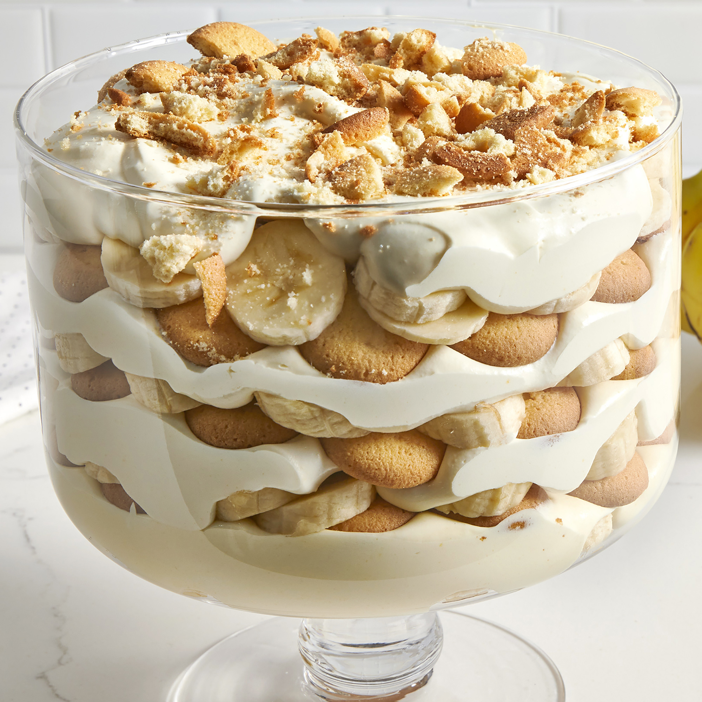

Banana Pudding

World's Best Banana Pudding!
This recipe comes courtesy of the world famous Magnolia Bakery.
Ingredients
- 1 14oz can sweetened condensed milk
- 1 1/2 cups ice cold water
- 1 3.4oz box vanilla instant pudding mix
- 3 cups heavy cream
- 4 cups sliced banana
- 1 12oz box Nilla Wafers
Steps
- In large bowl, beat together sweetened condensed milk and water until well combined. Add pudding mix and beat well. Cover and refridgerate for 3-4 hours or overnight.
- In large bowl, whip the heavy cream until stiff peaks form. Gently fold the whipped cream into the pudding mixture until no streaks of pudding remain.
- Dessert can either be made in individual portions or in a large glass bowl with 4-5 quart capacity.
- To assemble, arrange 1/3 of the Nilla wafers covering the bottom fo the bowl. Layer 1/3 of the banana pudding and 1/3 of the bananas and then 1/3 of the pudding mixture. Repeat twice more, garnishing with additional wafers or crumbs on the top layer. Cover tightly and allow to chill.
Home